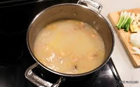

Rich and Creamy Chicken Broth

Description
This isn't your traditional clear chicken broth. This broth is opaque, creamy, and richly flavored,
and ready for use in any recipe that calls for broth, or seasoned and drunk by itself. Modeled loosely after
paitan ramen, a chicken broth made cloudy by the fat emulsified in it.
Ingredients
- 2 chicken carcasses, roughly chopped
- 1 onion, diced
- 8 cloves of garlic, minced
- 1 inch knob of ginger, peeled and minced
- 1 carrot, diced
- 1 oz piece of kombu or other dried seaweed
<2li>2 oz gelatin, or a half dozen chicken feet
Directions
- Place the carcasses into a heavy bottomed pot and cover by a quite a few inches with water.
If using chicken feet, cut off claws and place in pot.
- Cover and cook at a rolling boil for 8-12 hours. After a couple hours, remove from heat and mash the
carcasses with a potato masher.
- If using gelatin, at the end of boiling, sprinkle over the surface of the broth and stir it in.
- Place all aromatics into a large, heatproof bowl and strain broth into it.
- Steep for 40 minutes and strain.